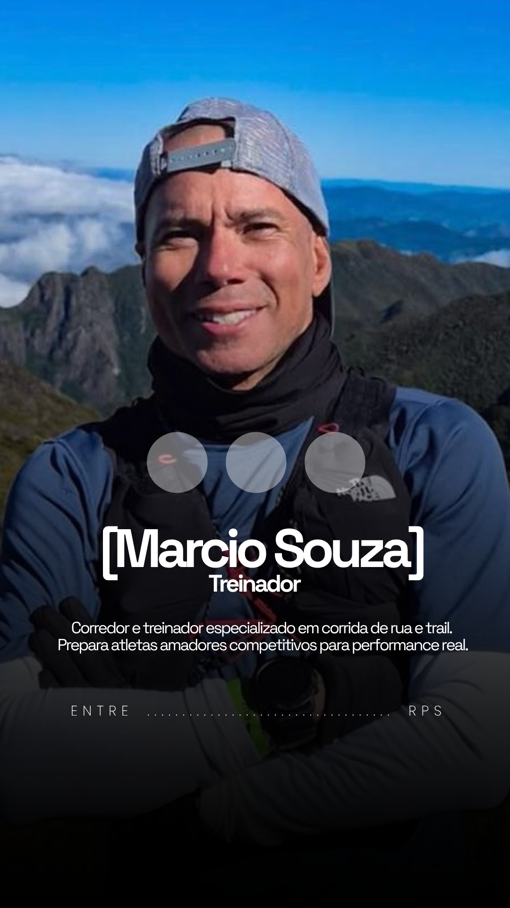
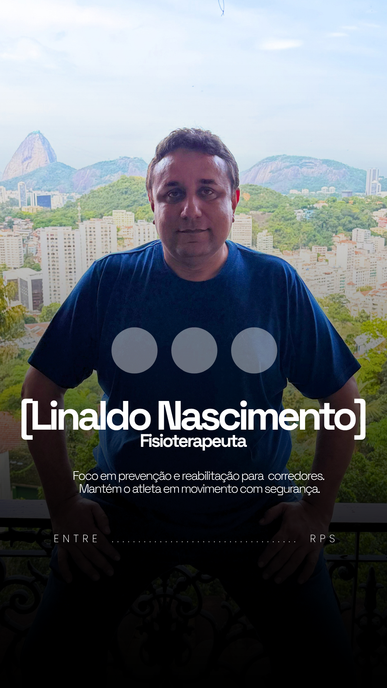
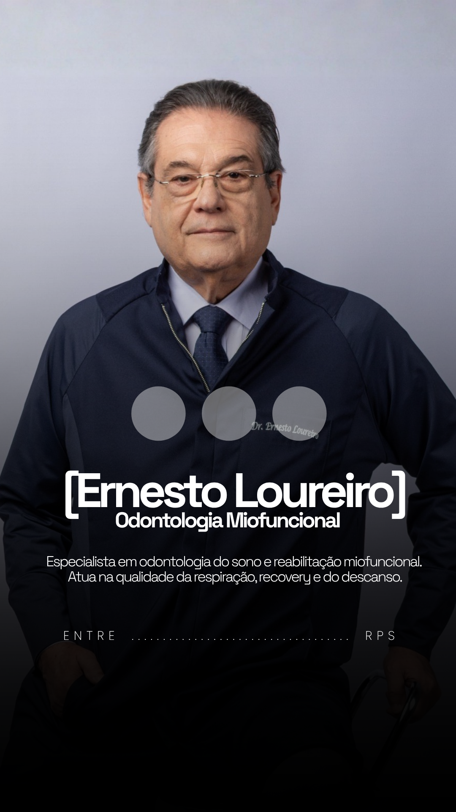
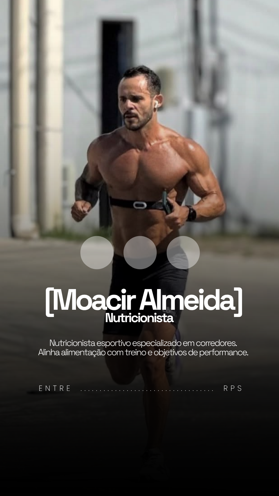
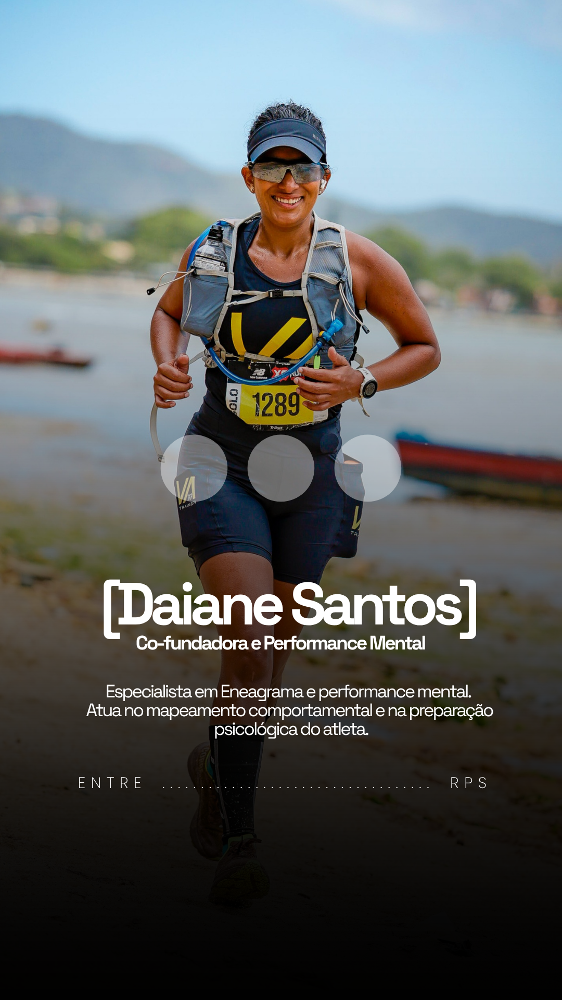
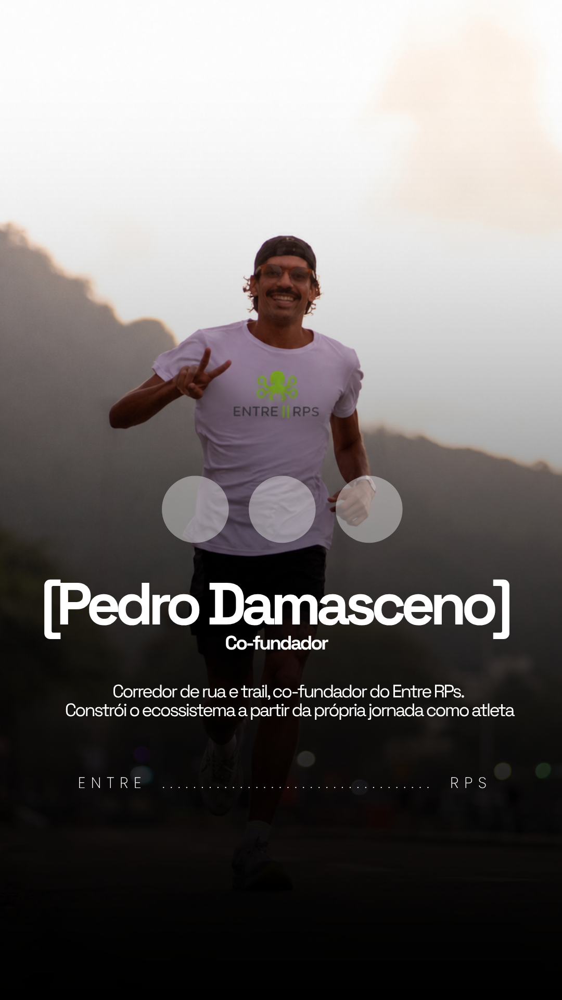

Cada profissional cuida de uma parte primordial da preparação deste atleta. A evolução vem da forma como essas partes se conectam.

TREINADOR
Treino, Escolhinha trail e Expedições
Prescreve e acompanha o treino da assessoria desde o primeiro dia. Prepara atletas amadores competitivos para performance real, com corrida de rua e trail.
Também conduz a Escolhinha trail, formação de base para quem está começando no trail, e as Expedições de treino, em picos e montanhas pelo Brasil.

FISIOTERAPIA
Fisioterapeuta, quiropraxista e osteopata
Formação inicial em preparação física. Entende a fisiologia do esporte e trabalha em três frentes: prevenção, reabilitação e fortalecimento.
A direção dele evita a lesão e sustenta o rendimento dentro de segurança e saúde.

ODONTOLOGIA DO SONO E MIOFUNCIONAL
Cuida da respiração do atleta, que sustenta performance e saúde. Respiração eficiente melhora o sono, a recuperação e o rendimento na prova.
Faz o exame do sono, para que o atleta saiba em que condição está antes de competir, e trabalha a musculatura e a função orofacial que sustentam uma respiração boa. Competir com segurança começa aí.

NUTRIÇÃO ESPORTIVA
Nutricionista
Nutricionista esportivo especializado em corredores. Alinha alimentação com treino e objetivo de performance, com atendimento online e acompanhamento estruturado.

PERFORMANCE MENTAL
Mental estratégico · Sócia-fundadora
Responsável pela estratégia do atleta de ponta a ponta: escolha e definição da prova, montagem da rotina, leitura do atleta como um todo e estratégia de prova.
O treinamento mental passa pelo perfil de personalidade. Uso o Eneagrama como ferramenta de autoconhecimento aplicado: cada perfil reage de um jeito ao platô, à prova que não sai como planejado e à pressão.
Sou ultra trail runner (50 km e mais). Falo de dentro da prova, não de fora.

SÓCIO · SUPORTE AO ATLETA
Sócio-fundador
Corredor de rua e trail. Constrói o ecossistema a partir da própria jornada como atleta.
Cuida do suporte do dia a dia: comunicação, contato com o atleta, agendamentos e apoio em inscrições. Também puxa treinos quando é preciso.
O atleta do Entre RPs tem à disposição banheira de gelo, bota pneumática e massagem. A massagem é feita com agendamento prévio e também está presente nos eventos do calendário Entre RPs, para quem treina e compete com a recuperação no mesmo plano.
Não tem fórmula de qualificação automática. O Diagnóstico segue o método Entre RPs.